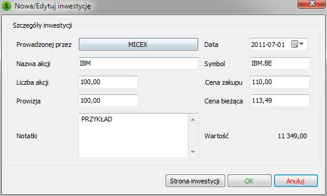
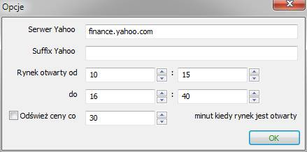

Na stronie inwestycji dostępne są następujące przyciski
Inwestycje w akcje |
Program MMEX umożliwia śledzenie inwestycji w fundusze i akcje.
Aby używać tej możliwości należy utworzyć nowe konto
W kreatorze tworzenia konta, ustaw Rodzaj konta na 'Inwestycyjne'
Tak utworzone konto zostanie dodane do sekcji 'Akcje' drzewka nawigacji.
Na stronie głównej programu, konta te pojawią się w sekcji Akcje
Konta inwestycyjne wyświetlają się na własnej stronie 'Inwestycje'.
Ekran inwestycji
Na
stronie inwestycji dostępne są następujące przyciski
Nowy
Pozwala
na dodanie nowych akcji.
Edytuj
Pozwala
na zmianę szczegółów
Usuń
Usuwa
akcje
Odświeżanie
Uaktualnia
ceny akcji z internetu.
Ustawienia
Otwiera
okno ustawień inwestycji.
Przycisk Nowy
Kliknięcie
przycisku 'Nowy' otwiera okno do wprowadzenia informacji o akcjach.
|
 |
Przycisk Odświeżanie
Jeżeli
masz prawidłowo ustawione kody kursów giełdowych dla
poszczególnych akcji, kliknięcie przycisku 'Odświeżanie'
spowoduje uaktualnienie cen wszystkich akcji jakie posiadasz.
Przycisk Ustawienia
Kliknięcie tego przycisku
wywoła okno wprowadzania ustawień.
|
 |
Jeżeli wszystkie Twoje akcje pochodzą z tego samego kraju i wszystkie są sprzedawane na tej samej giełdzie – wtedy można dodać suffix Yahoo jako ogólne ustawienie dla wszystkich akcji. Spowoduje to ustawienie kodu rynku dla wszystkich akcji i umożliwi korzystanie z przycisku 'Odświeżanie' na stronie Inwestycje.
Przykład: Dla australijskiej giełdy papierów wartościowych
Używając Yahoo, suffix giełdy to: '.AX'
Używając Google, suffix giełdy is: ':ASX'
Dostawca kursów giełdowych akcji może być zmieniony przy użyciu pozycji menu: Narzędzia –>Opcje –> Inne